PCD Bangalore 2020
Processing community day India has been created by and for the local communities in India
Welcome to Processing Community Day (PCD) - Bangalore 2020 is a day to celebrate and explore art, code, and diversity around the world. Join us this year for fun talks, workshops, projects and more!
Event Schedule
-
930-1000 : Registration
-
1000-1030 : Event Opening
-
1030-1120 : Talks - Loop 1
Suraj Bharathy : Personal Projects, Practice and Process
Dhyeya Anand : Building robots using Processing
Anmol Srivastava : Processing as a tool for nurturing Computational Thinking in curriculums of Indian Design Schools
Yati Padia : Open Source opportunities for Dummies
-
1130-1300 : Workshops - Loop 1
Electronics with micropython - code beyond screens
Loop-imation: Intro to making repeated geometric animations in p5.jsn -
1300-1330 : Lunch
-
1330-1430 : Project Showcase (+Lunch)
-
1430-1600 : Workshops - Loop 2
Making The Thing that Makes the Thing: Exploring Generative Art & Design with p5.js
Machine Learning for Creative Expression -
1600-1700 : Talks - Loop 1
Joe Sujin : Processing Interactions
Pallavi Ray : Doodling ver2.0 (Doodling with code)
Pratyush Raman : Talking to the Physical World with Software
Tanvi Kumar : Visualisation in Engineering -
1700-1730 : Livecoding performance with TidalCycles and P5 by Abhinay Khoparzi
Registration
This year, the event will be held at NID Bangalore, and is ticketed at Rs.110/-
Please Note: Workshop registration links will be sent out on Feb 1st. As some workshops require hardware - we will procure them for participants at cost if needed. Vouchers for the same will be made available on Feb 1st.
RegisterCheck out fun things people have made with code
Scroll to learn more about the participants at PCD this year!
Register
Speakers
-
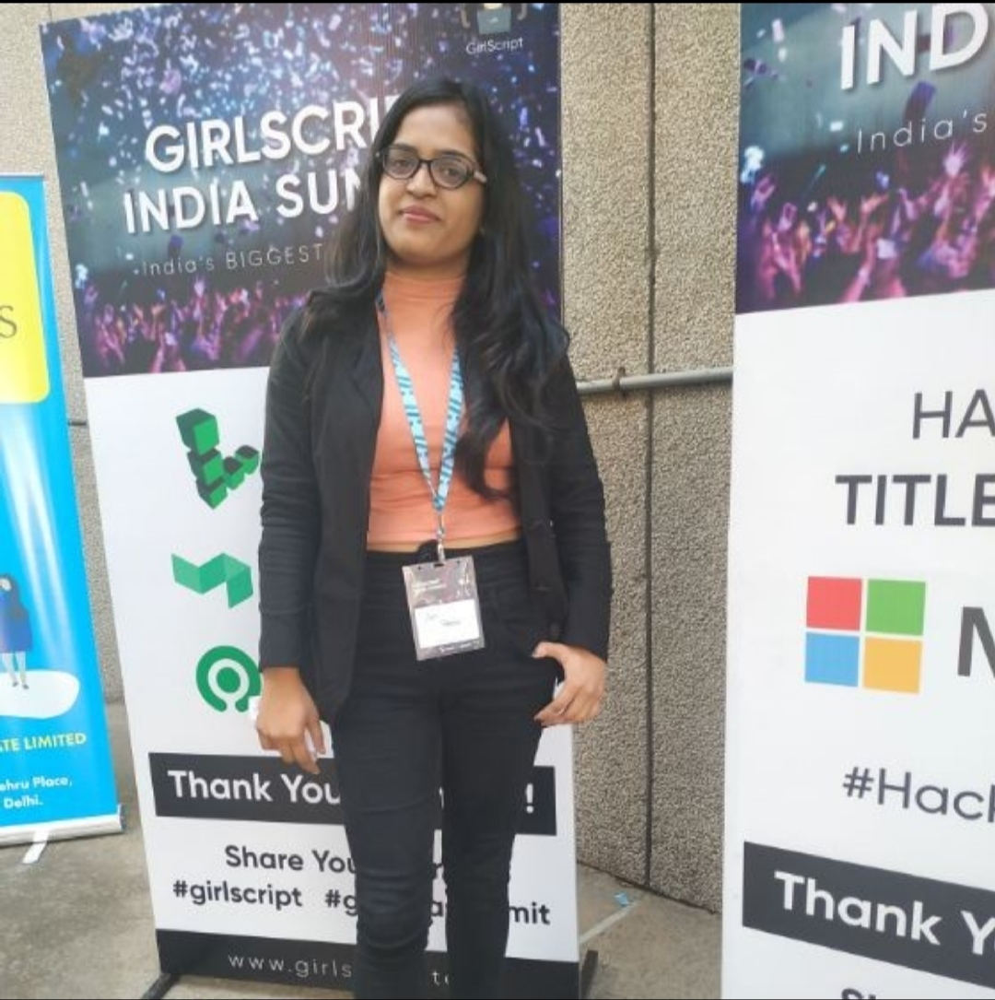
Yati Padia is an undergraduate, pursuing Bachelor's in computer science from College of Engineering and Technology, Bhubaneswar, India. She is one of the winners of GirlScript Summer of Code, 2019. She contributes to open-source software. Her fields of interest include open source and android development. Her hobbies include writing and acting. She is going to be talking about Open Source opportunities for Dummies
-
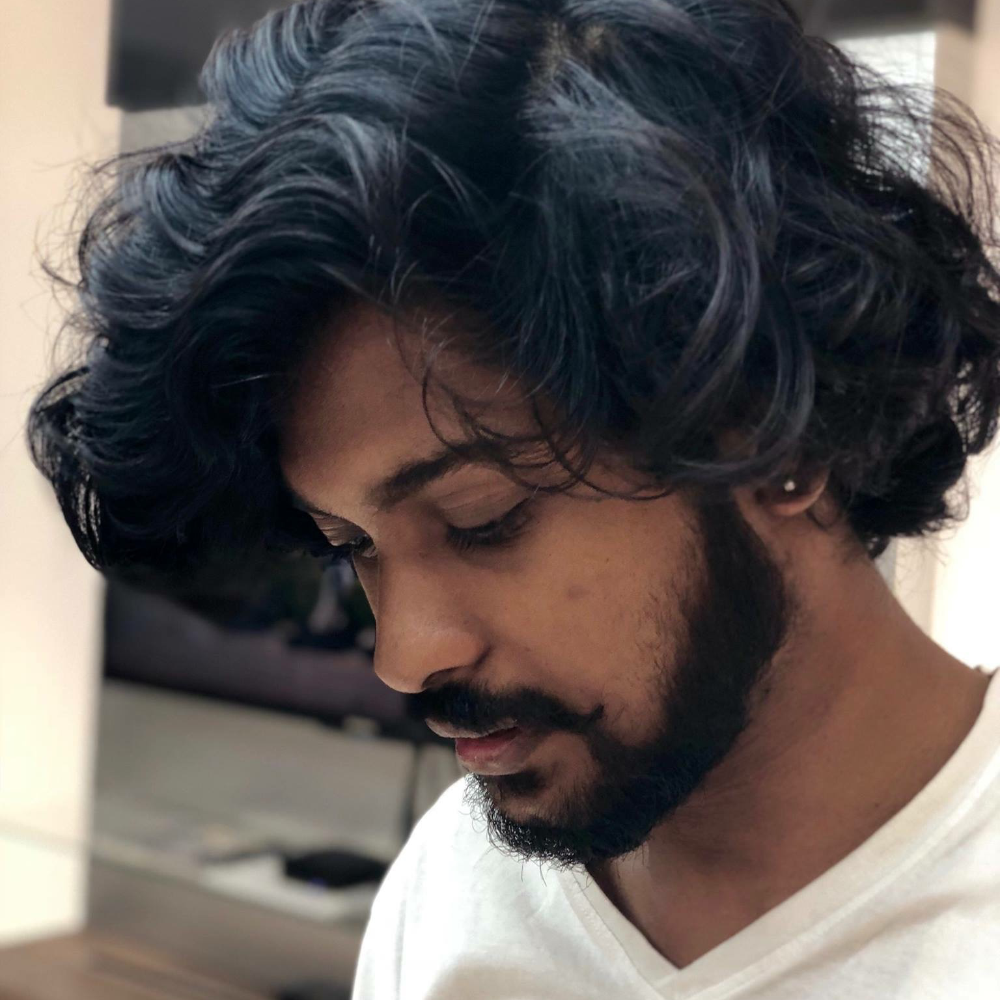
Suraj Bharathy , from Bangalore, India is a Designer, artist, and musician with too many side projects. Loves travel, food, tea, films, and Alan Fletcher. He is going to be talking about his journey in Personal Projects, Practice and Process
-
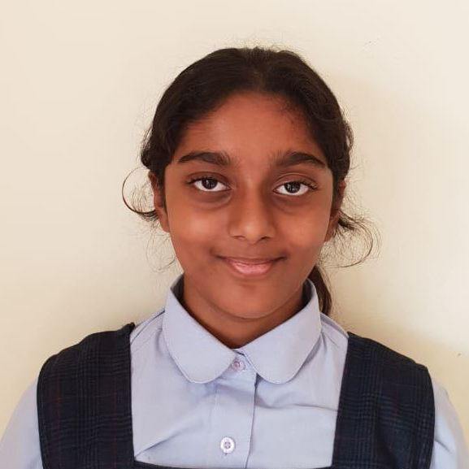
Dhyeya Anand hailing from Bangalore is a student at Sri Kumaran's. She likes robotics and mathematics, and is going to be talking about Building robots using Processing
-
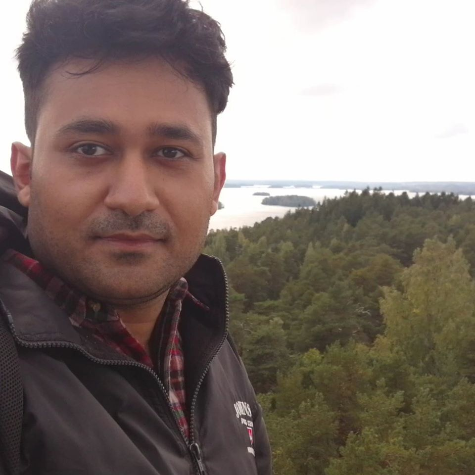
Anmol Srivastava Dr. Anmol Srivastava is a Human-Computer Interaction designer. His research interests are towards exploring the potential of emerging technologies to aid utility, usability and creative self-expression in various contexts and use cases. At present he is serving as an Assistant Professor at the School of Design, UPES. He is going to be talking about Processing as a tool for nurturing Computational Thinking in curriculums of Indian Design Schools
-
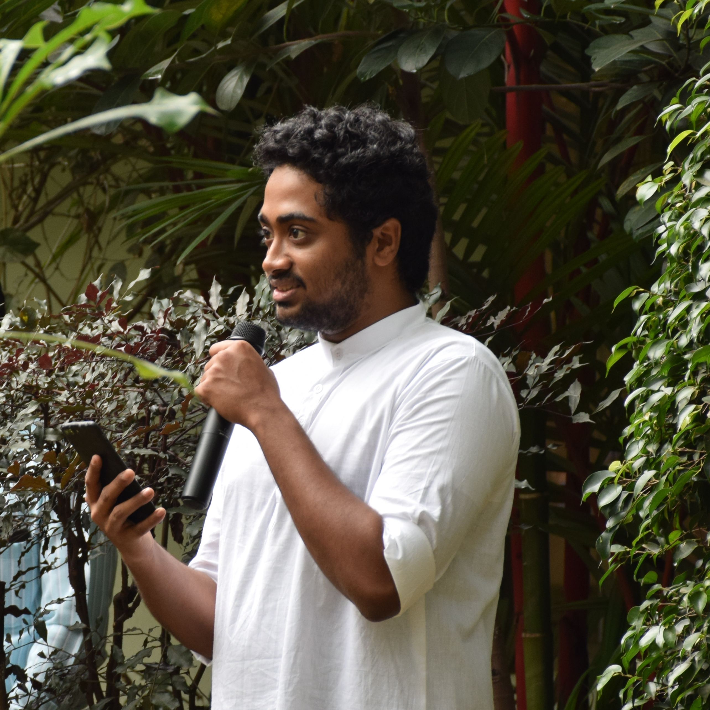
Joe Sujin , a Masters student in NID Bangalore, is currently doing his masters in GAme Design. He is going to be talking about multiple works of his in his talk, Processing Interactions
-
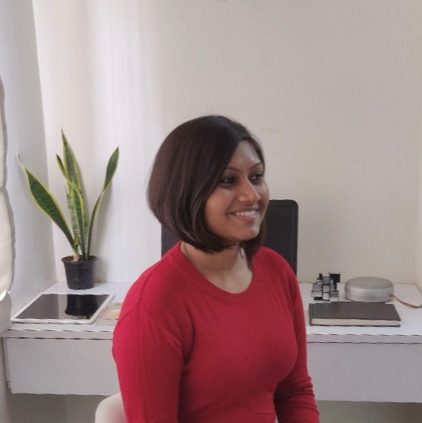
Pallavi Ray is an Industrial designer trained in design thinking and prototyping skills. It excites me to work across disciplines to build interesting and usable interactions between the animate and the inanimate. When she's not busy trying to make my concepts work, she likes to draw with code, go for runs, and read about human behavior. She is going to be talking about Doodling ver2.0 (Doodling with code)
-
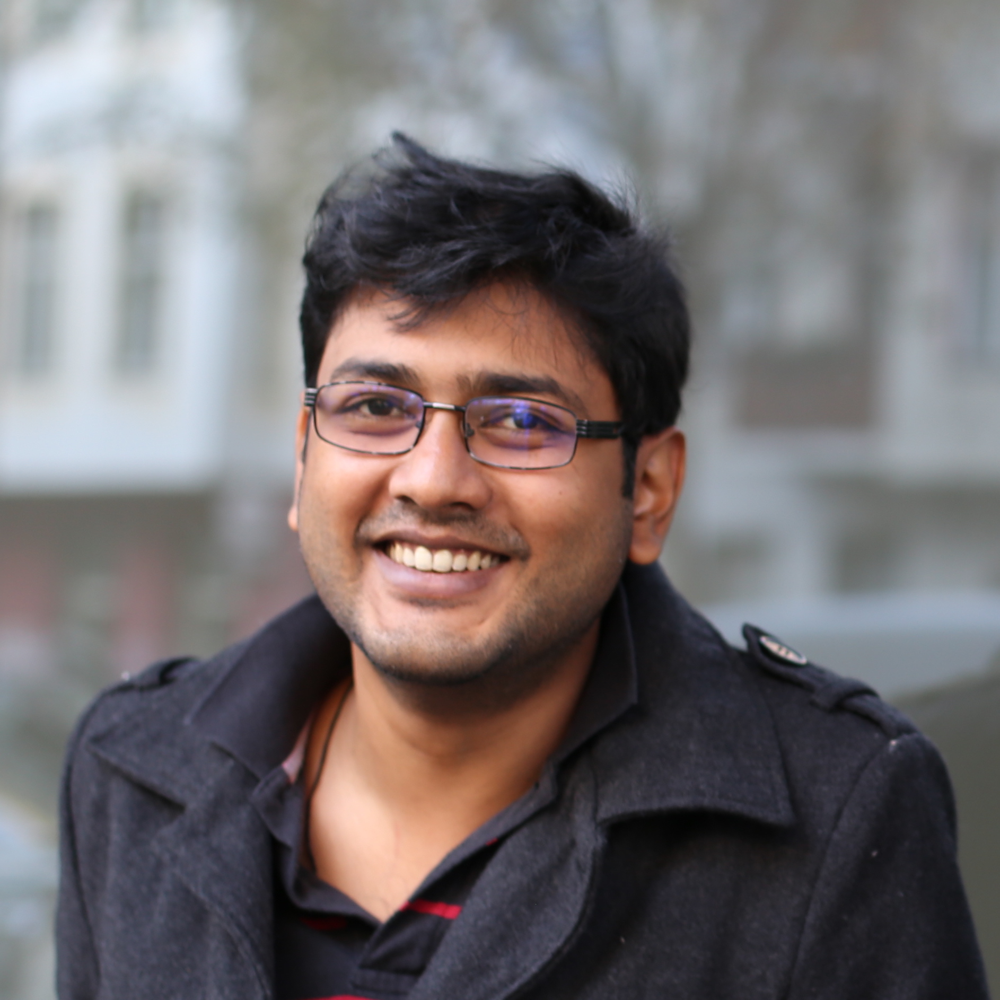
Pratyush Raman is a practising artist from Bangalore, whose work revolves around education, technology and playfulness of mathematics. He teaches creative coding and new media at Srishti Institute of Art, Design and Technology. His enquiries deal with consciousness, conditioning and fiction in the contemporary paradigm of civilization. He will be talking about Talking to the Physical World with Software
-
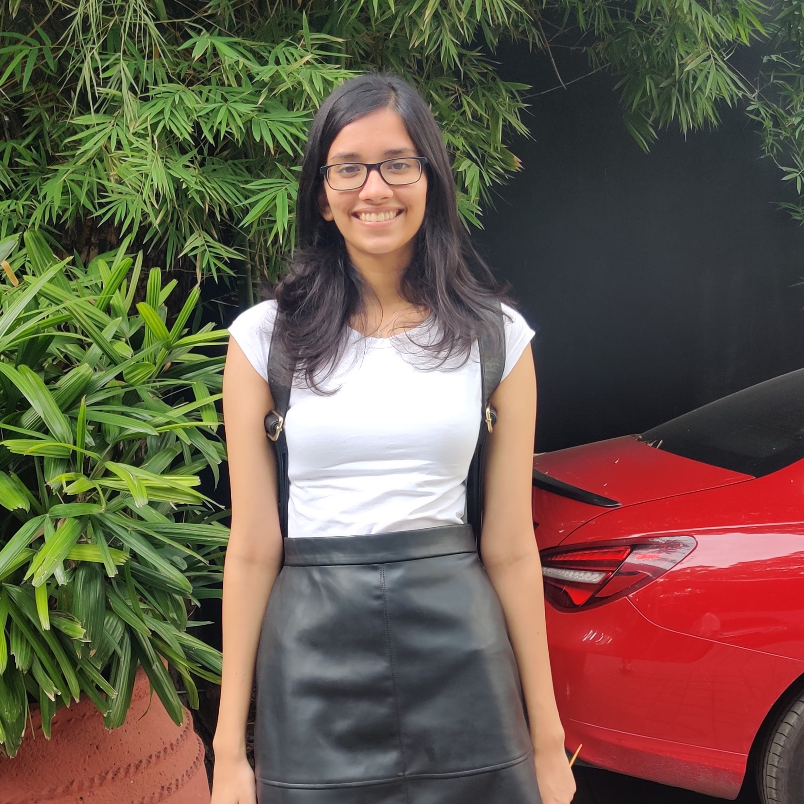
Tanvi Kumar is a final year undergraduate student at NIT Trichy who codes in her free time. She enjoys algorithmic coding, software development and exploring new avenues in the field of computer science. She is going to be talking to us about Visualisation in Engineering
Workshops
-
Machine Learning for Creative Expression
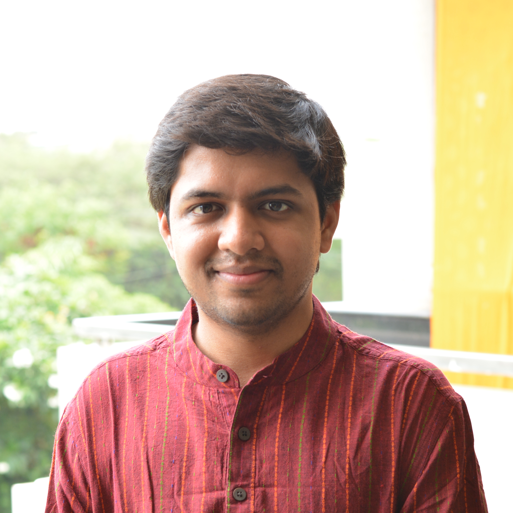Harshit Agarwalis an AI (artificial intelligence) artist and human computer interaction (HCI) researcher. He graduated from the Fluid Interfaces group at MIT Media Lab and the Indian Institute of Technology (IIT Guwahati). Over the years, he has exhibited hiswork at premier art festivals and museums around the world, from the Ars Electronica Festival (Austria), Nature Morte (Delhi, India), HNF Museum (Germany), Art Bengaluru (Bangalore, India), Tate Modern (UK) to the BeFantastic Festival (Bangalore, India), ISEA (Canada). His work has also been extensively covered in international media, including BBC, New York Times. "
-
Making The Thing that Makes the Thing: Exploring Generative Art & Design with p5.js
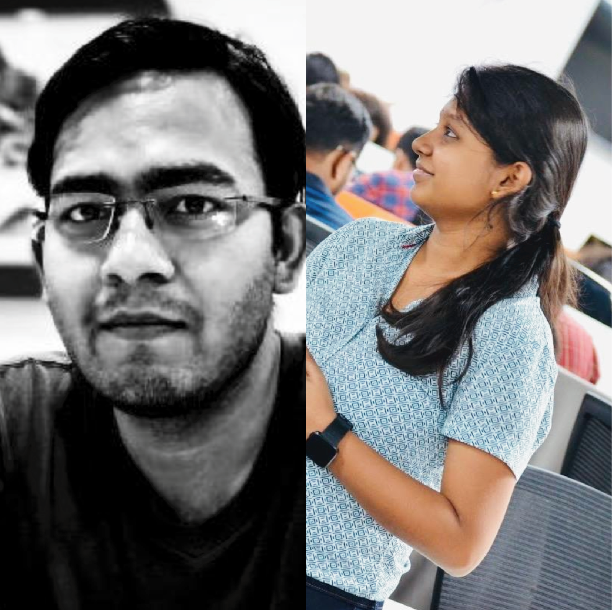Priti is an Information Designer at Storylabs, Gramener's R&D space for exploring innovative storytelling with data. She has a Master's in Visual Design from Srishti Institute of Art, Design & Technology. She is passionate about all aspects of creative technology, from creative coding, generative art, and data visualisation to pen plotters and creative electronics.
Ajith is a developer passionate about building creative tools that meld the expressivity of programming with the ease of direct manipulation. He has built open-source tools for cartography at Mapbox and audio-visual tools at Adori Labs. -
Electronics with micropython - code beyond screens
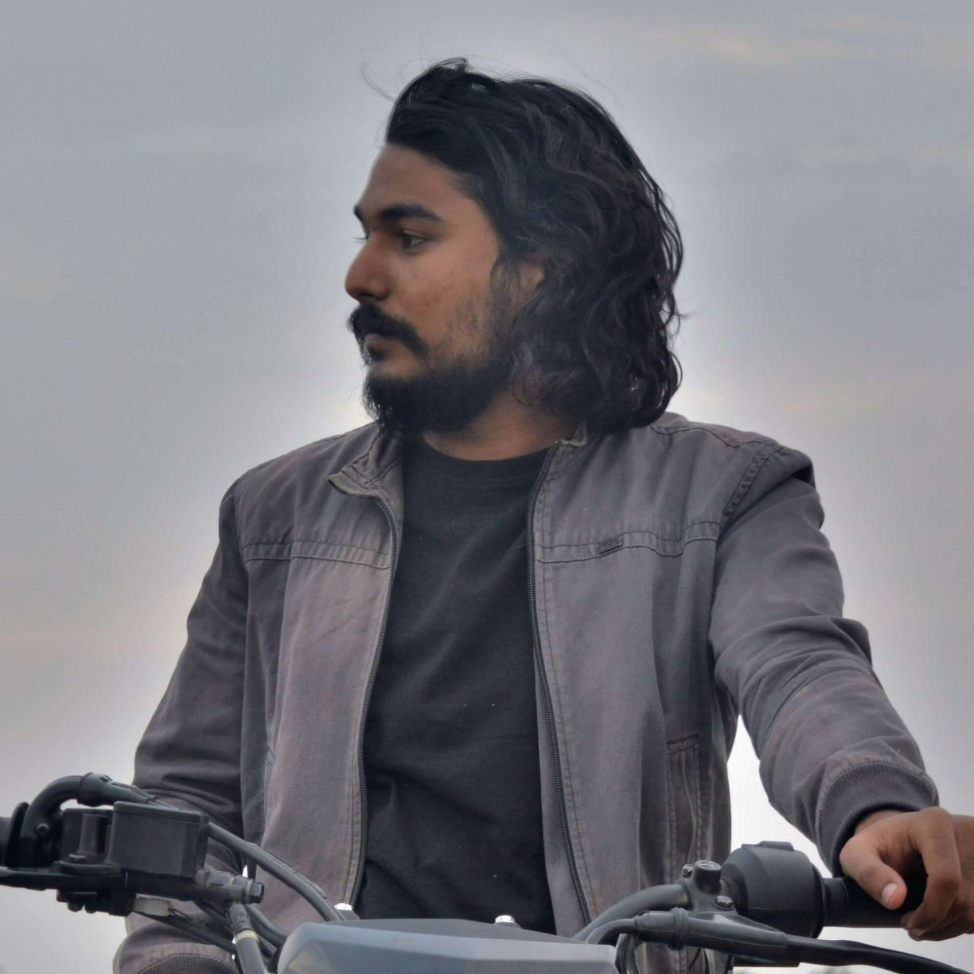Hasan is a self-taught technologist who started his career in cybersecurity research by publishing about insecurities in Antivirus and Surveillance systems at the age of 18. He has a passion for teaching and worked as a trainer across the country in various universities including KGEC - Kanpur, IITK - Kanpur, ITM - Gwalior, LPU - Jalandhar and RTU - Kota. A strong believer in the DIY and open-source movements, he did HCI experiments like a voice-based interfaces in 2015 which won a coding challenge at IIT Mumbai and a radio which takes your happiness and energy as inputs and plays relevant music. He worked from 2018 to 2019 as a team leader for a small startup in Bangalore in the field of IoT, before joining Jaaga in the mid-2019 as the Head of Study. Hasan has now started working as a Tech Artist, using AI, Electronics and code as his primary medium.
-
Loop-imation: Intro to making repeated geometric animations in p5.js

Rasagy Sharma is the Principal Designer at Gramener, and an aspiring data artist, who loves exploring the intersection of design, data and technology.
Project Showcase
-
Ink and Paper: A Gallery of Plotter Art
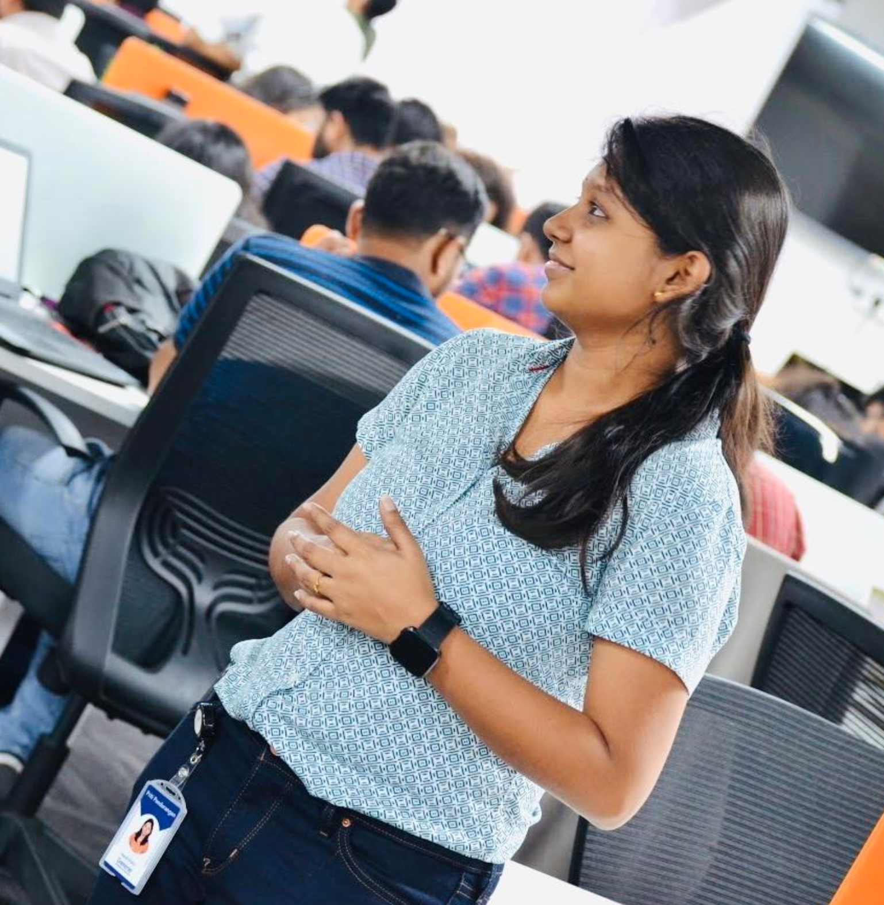Priti is an Information Designer at Storylabs, Gramener's R&D space for exploring innovative storytelling with data. She has a Master's in Visual Design from Srishti Institute of Art, Design & Technology. She is passionate about all aspects of creative technology, from creative coding, generative art and data visualisation to pen plotters and creative electronics.
-
Lymap
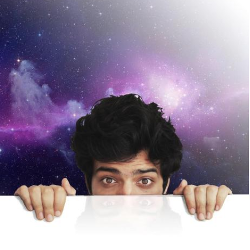Kartik Tyagi is a fourth-year Architecture undergrad from IIT Kharagpur. He is curious about emerging technologies and intrigued by the design of things around me and how it affects human behavior. He loves visualizing the abstract while playing at the intersection of Design and Tech.
-
India in Pixels

Ashris makes data visualizations using Processing - India in Pixels is a YouTube channel created with Processing and has garnered over 70 thousand subscribers now!
-
CODE in frames per second
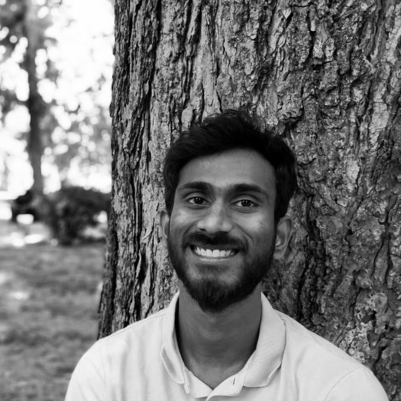Rohit is an animation film designer from Bangaloree who recently got into the world of creative coding and is not exploring visualisaoin and animation in p5.js. He loves football, chess, Anime and travel.
-
Processing Visualisations
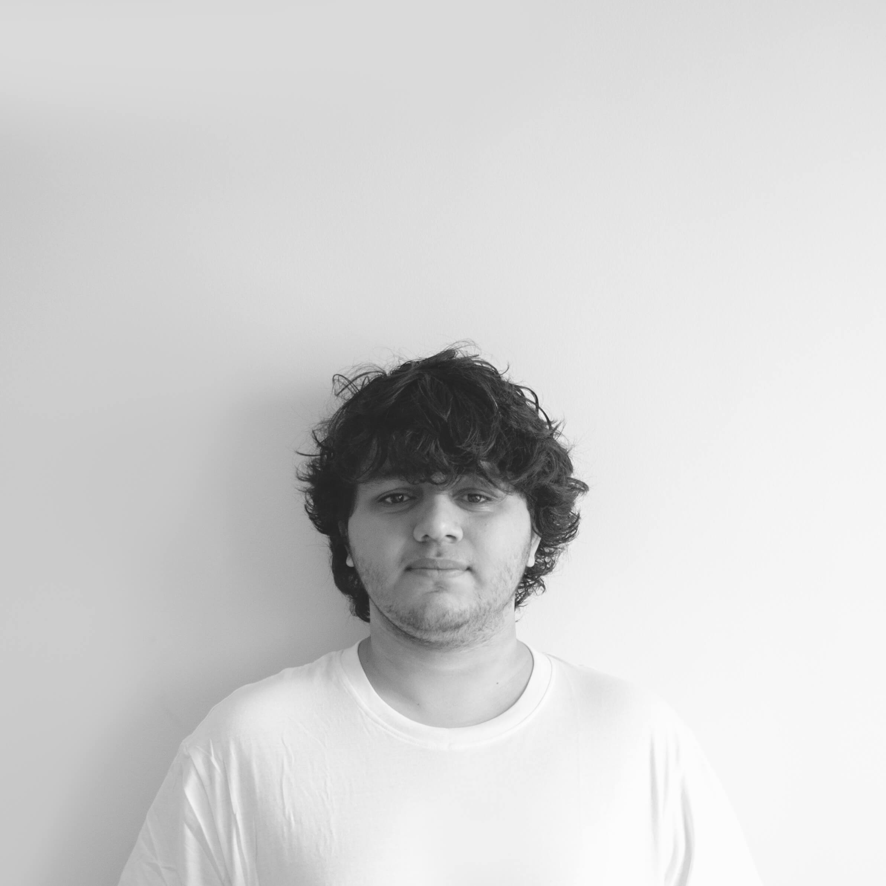Shivam Thapliyal is a product illustrator/ creative technologist based in Bangalore. He likes tinkering with Arduino, making LED glow and making interactive art works at the intersection of code & art. His works have been featured in irregulars Art Fair, New Delhi, and JS Nation, Amsterdam, 2019.
Livecoding performance with TidalCycles and P5
-
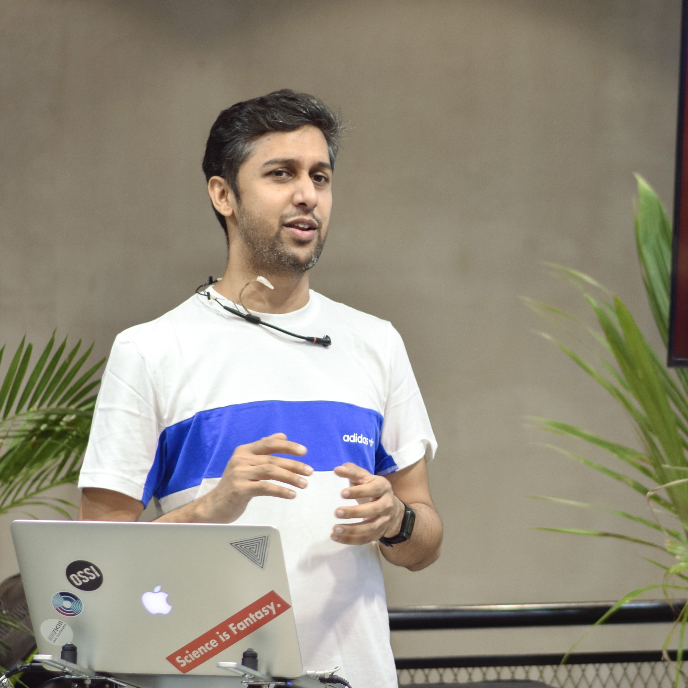
Abhinay Khoparzi is a multidisciplinary creative technologist practicing across video, music and web technologies with a long relationship with the experimental electronic music scene in Mumbai. As an extension of Algorave India he has done with live coding performances at Exploring the Edge, (IIC, Delhi, 2020), Fat Finger Mayhem (MMB, Mumbai, 2018 and 2019), Algorave Sheffield (UK, 2018), ICLC (Madrid, 2019), and organised/curated multiple independent Algoraves in Delhi, Mumbai, Pune and Bangalore.
Organisers
-
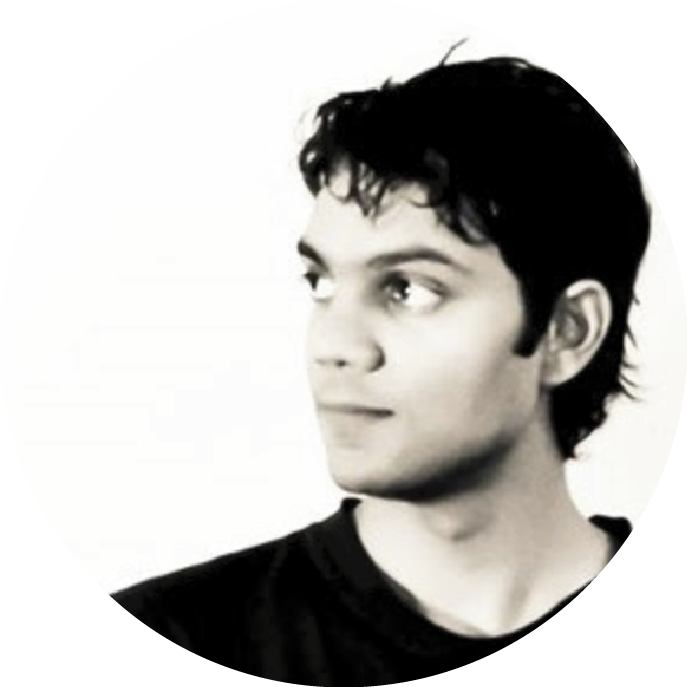
Karthik Dondeti is a practicing architect and founder of Voxelscapes - an Architecture and Computational Design studio, and Codebalé - Generative art studio based in Bangalore. He holds a Bachelors Degree in Architecture from the School of Planning and Architecture, New Delhi and a Masters Degree focusing on Design and Technology from the Graduate School of Design at Harvard University.
-
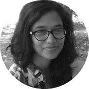
Manaswini Das is a software engineer from Bangalore, India. She holds a Bachelor's degree in computer science and is currently an associate software engineer at Red Hat. She has also been an Outreachy alumnus and a Processing Foundation fellow. She is passionate about open source and mentoring.
-

Mathura Govindarajan is a software engineer and creative technologist from Bangalore, India. She is founder of Paper Crane lab - an education lab in Bangalore. She holds a Bachelors in Electronics Engg. and completed her Masters and Fellowship at New York University's Interactive Telecommunications program.
-
Rushali Paratey is an artist and engineer currently based in LA where she works as a technologist at Alchemy. She worked as Research Resident at New York University's Interactive Telecommunications program where she received her Masters.